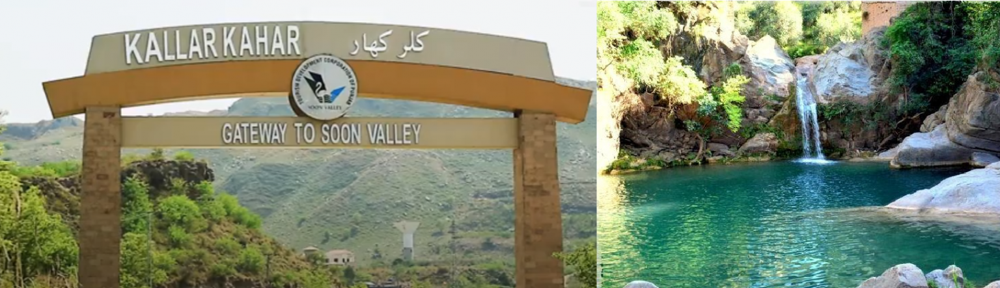
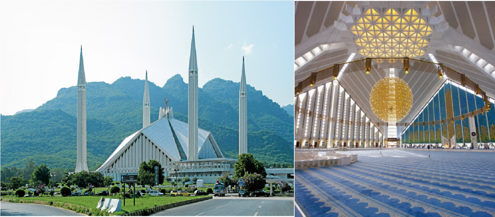
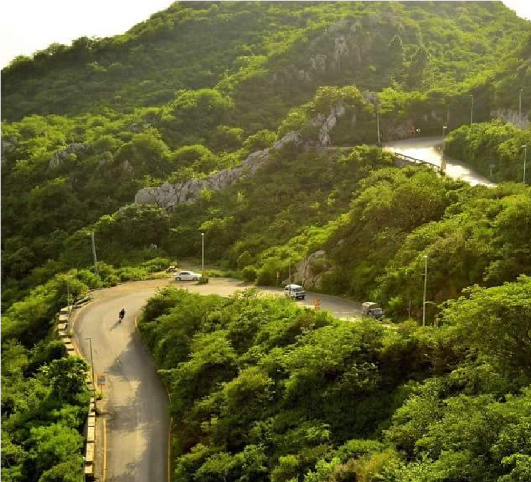
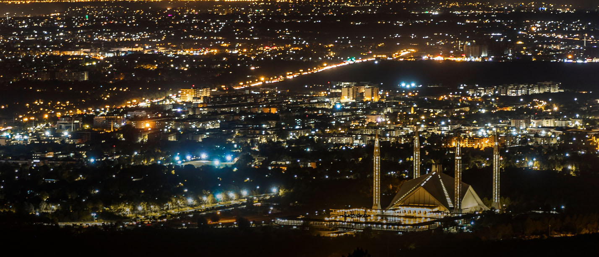

About me
Sajjad loves to travel. He has been to many different countries around the world, and he has always had an amazing time. He enjoys learning about new cultures and meeting new people. He also loves to try new foods and see new sights.
One of Sajjad's favorite travel experiences was his trip to India. He visited the Taj Mahal, the Golden Temple, and other famous landmarks. He also had the chance to experience Indian culture firsthand. He ate delicious food, met friendly people, and learned about Indian history and religion.
Welcome to my Blog
If you ever plan a road trip from Lahore to Islamabad, make sure to make a stay at Kallar Kahar for an hour.

So, we continued our journey and reached Islamabad at 2:30 pm. As it was a family trip, we landed at our relative’s home. Since we had to visit many places, we made sure not to waste our time. We had some rest to recharge ourselves and woke up at 4:00 pm. And then we were ready to explore the beauty of Islamabad.
First we went to Faisal Masjid. I always wanted to see this place, and this was the first time I was visiting it. So, I was overjoyed and overwhelmed to enter the mosque.
Make sure to visit this place whenever you go to Islamabad.

After spending about 2 hours in the mosque, we went to the Rawal dam lake-view park of Islamabad. We enjoyed boating and the beautiful views were also worth watching in the evening. The park is best known for its beauty and elegance. Since I was with my family and cousins, I enjoyed this a lot at this recreational park.
There is a famous restaurant Monal in Islamabad.

And the best view comes after the hardest climb
When we reached there, the view was spectacular and attractive enough to capture all our attention. Imagine sitting in mountains, having your meal followed by a cup of tea. I have visited many restaurants in Lahore, but this experience was entirely different.
“By discovering nature, you discover yourself”

After spending some quality time at Monal, having lunch and tea, we aimed at coming back home. But wait. On our way back, we suddenly planned to visit Daman-e-Koh. Daman-e-Koh is on the way to Monal. So, here you go with a pro tip. Whenever you plan to visit Monal in Islamabad, spare some time to pay a visit to Daman-e-Koh especially in the evening.